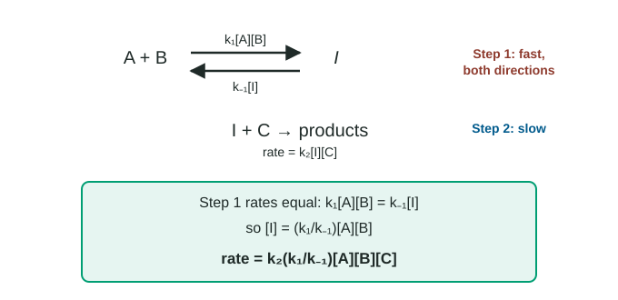

In topic 5.8 the slow step came first, so the rate law was easy: it was the rate law of that first step. Often the slow step comes later, after a fast step that runs both ways. The slow step's rate law then contains an intermediate, which you cannot use in a final rate law. The pre-equilibrium approximation gets rid of it.
Reversible steps
A reversible reaction runs in both directions: the forward reaction turns reactants into products, and the reverse reaction turns products back into reactants. It is written with a double arrow, ⇌. Each direction is an elementary step with its own rate constant: k₁ for the forward step and k₋₁ for the reverse step.
When a reversible step is fast in both directions and the next step is slow, the fast step stays balanced: particles go forward and back many times before the slow step uses any of them. This balance of equal forward and reverse rates is the same kind of dynamic equilibrium you met with vapor pressure in topic 3.3.

The method
- Write the rate law of the slow step from its coefficients. It contains an intermediate.
- For the fast reversible step, set forward rate = reverse rate.
- Solve that equation for the intermediate's concentration.
- Substitute into the slow step's rate law. Combine the constants into one k.
Worked example: 2 NO + O₂ → 2 NO₂
Mechanism: (1) NO + NO ⇌ N₂O₂ (fast, reversible); (2) N₂O₂ + O₂ → 2 NO₂ (slow).
Step 1, slow step: rate = k₂[N₂O₂][O₂]. N₂O₂ is an intermediate.
Step 2, balance the fast step: forward rate k₁[NO]² = reverse rate k₋₁[N₂O₂].
Step 3, solve: [N₂O₂] = (k₁/k₋₁)[NO]².
Step 4, substitute: rate = k₂(k₁/k₋₁)[NO]²[O₂] = k[NO]²[O₂], with k = k₂k₁/k₋₁.
Check the sum: 2 NO + N₂O₂ + O₂ → N₂O₂ + 2 NO₂, so 2 NO + O₂ → 2 NO₂. ✓
The prediction, third order overall, matches the measured rate law for this reaction.
Worked example: numbers
Using k₁ = 2.0 × 10³ M⁻¹ s⁻¹, k₋₁ = 5.0 × 10⁴ s⁻¹ and k₂ = 1.5 × 10² M⁻¹ s⁻¹:
k = k₂k₁/k₋₁ = (1.5 × 10² M⁻¹ s⁻¹)(2.0 × 10³ M⁻¹ s⁻¹)/(5.0 × 10⁴ s⁻¹) = 6.0 M⁻² s⁻¹.
The units come out as M⁻² s⁻¹, which is right for a third-order rate law.
What the result tells you
- The final rate law can contain reactants from the fast step and from the slow step. In the example, all the NO comes from step 1 and the O₂ from step 2.
- A fast reversible step followed by a slow step can give the same rate law as a single elementary step. For H₂ + I₂ → 2 HI, both "one step" and "I₂ ⇌ 2 I (fast), then H₂ + 2 I → 2 HI (slow)" predict rate = k[H₂][I₂]. Rate data alone cannot tell them apart.
- A reactant that appears in both steps can end up with a higher order than either step suggests on its own: for A + B ⇌ C (fast), then C + B → D (slow), rate = k[A][B]².